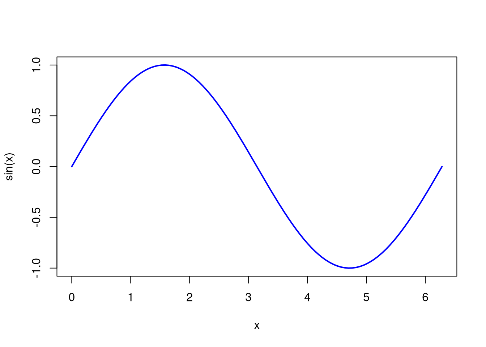
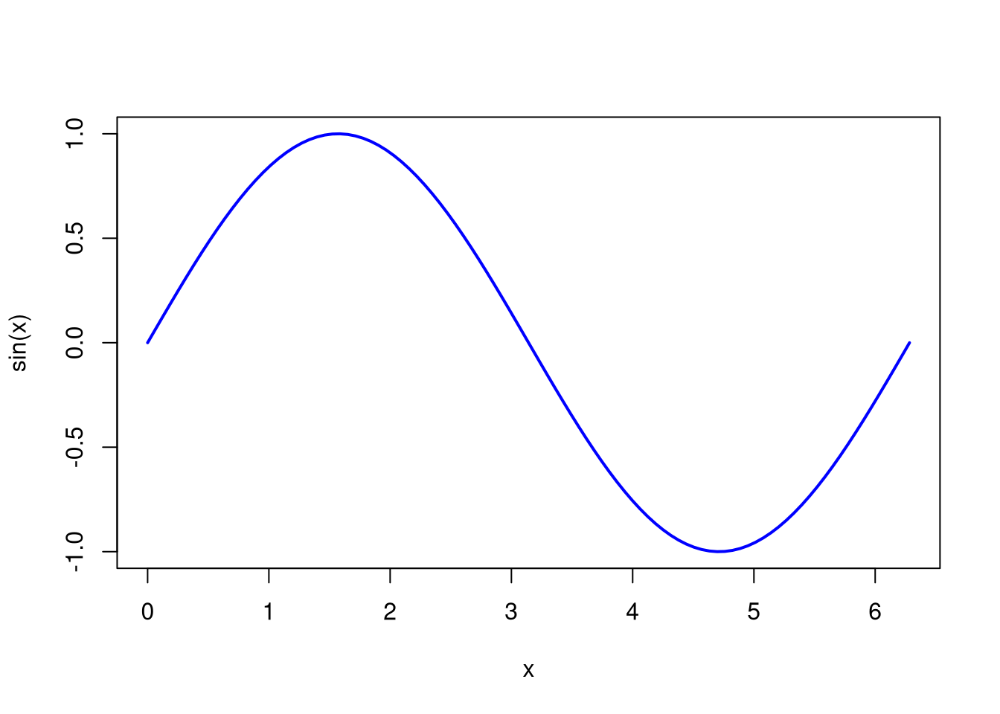

x <- seq(0, 2*pi, length.out = 100)
plot(x, sin(x), type = "l", col = "blue", lwd = 2)
Quarto Markdown é uma extensão poderosa da linguagem Markdown, desenvolvida para criar documentos científicos e técnicos de alta qualidade.
Ele permite misturar texto formatado, código executável (em linguagens como R, Python, Julia), equações matemáticas com LaTeX, gráficos e tabelas, tudo em um só arquivo .qmd.
Com Quarto você pode gerar automaticamente documentos nos formatos:
HTML interativo
PDF com qualidade tipográfica
EPUB para eBooks
Slides (Reveal.js, Beamer)
Apresentações interativas e muito mais.
| Característica | Markdown (.md) | Quarto Markdown (.qmd) |
|---|---|---|
| Formatação básica de texto | ✅ | ✅ |
| Suporte a HTML | ✅ | ✅ |
| Equações com LaTeX | ❌ (exceto em extensões específicas) | ✅ |
| Código executável | ❌ | ✅ (R, Python, Julia, Observable) |
| Geração de EPUB/PDF/Slides | ❌ | ✅ |
| Suporte a YAML | Parcial | ✅ (usado extensivamente para metadados) |
| Foco principal | Simplicidade e legibilidade | Publicações científicas e técnicas com código |
Resumo: o Markdown tradicional é excelente para textos simples, enquanto o Quarto Markdown é ideal para conteúdos técnicos e científicos que combinam texto, código e gráficos em um único documento.
Este é um exemplo de documento escrito em Markdown com Quarto. Ele mostra como formatar textos, inserir imagens, escrever equações e exibir código de forma elegante e simples.
# Títulos e Texto## Nível 2### Nível 3Você pode usar **negrito**, *itálico*, ou ambos: ***negrito e itálico***.Você pode usar negrito, itálico, ou ambos: negrito e itálico.
Você também pode criar citações:
> A matemática é a linguagem com a qual Deus escreveu o universo. — GalileuA matemática é a linguagem com a qual Deus escreveu o universo. — Galileu
## Lista com marcadores:
- Item A
- Item B
- Subitem B.1
- Subitem B.2## Lista numerada:
1. Primeiro
2. Segundo
3. Terceiro## Link:
[Site oficial do Quarto](https://quarto.org)## Imagem:

# Tabelas
| Nome | Idade | Cidade |
|-|-|-|
| Alice | 25 | São Paulo |
| Bernardo | 30 | Salvador |
| Carla | 22 | Curitiba || Nome | Idade | Cidade |
|---|---|---|
| Alice | 25 | São Paulo |
| Bernardo | 30 | Salvador |
| Carla | 22 | Curitiba |
A famosa identidade de Euler: $e^{i\pi} + 1 = 0$A famosa identidade de Euler: \(e^{i\pi} + 1 = 0\)
$$
\int_0^\infty e^{-x^2} dx = \frac{\sqrt{\pi}}{2}
$$\[ \int_0^\infty e^{-x^2} dx = \frac{\sqrt{\pi}}{2} \]
x <- seq(0, 2*pi, length.out = 100)
plot(x, sin(x), type = "l", col = "blue", lwd = 2)
import numpy as np
import matplotlib.pyplot as plt
x = np.linspace(0, 2*np.pi, 100)
plt.plot(x, np.sin(x))
plt.title("Seno")
plt.show()Este modelo mostra o poder do Markdown aliado ao Quarto para produzir documentos claros, científicos e elegantes — prontos para HTML, PDF, EPUB ou slides.
Criado por Celso Marcellini com ❤️ e código.